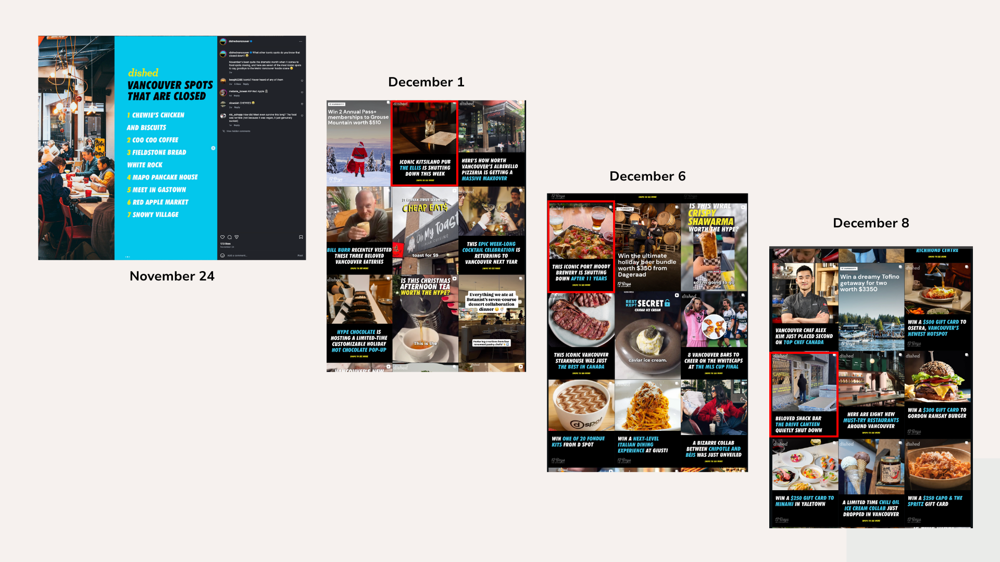

An Overview of the Restaurant Industry in Vancouver
The Growth of a Culinary City
Watch how restaurant licenses have populated the city over the last decade.
In 2020, there were 715 food-and-beverage businesses.
This included 392 quick-service eateries, 135 full-service restaurants, 110 retailers, and 78 liquor primary businesses. (Daily Hive)
Yet in July 2025, the Vancouver Sun reported that a lack of customers is causing strain to the industry.
In the span of about two weeks, DishedVancouver's Instagram featured 4 posts about restaurants closing, and with each swipe of a new 3x3 grid, more often than not, you can find a post about another food establishment closing
This made us ask a few key questions, such as
➔ Why does it feel like there is an influx of closures happening around Vancouver?
➔ Is there one type of cuisine that is more likely to survive longer than others?
➔ I feel like I just saw a different restaurant there a few months ago... is there a lot of turnover in this space?
➔ Has the restaurant industry not recovered from the pandemic?

To understand what this looks like on a micro scale, we zoomed in on V6E, a dense and highly competitive area in the heart of Downtown Vancouver.
Using our dataset, we identified all the restaurants that are currently open.
This gives us a sense of how packed the neighbourhood is...
Looking at the current landscape by cuisine type.
One category clearly dominates: Japanese restaurants.
In 2022, Vancouver Is Awesome even called Vancouver the “non-Japanese sushi capital of the world”.
Another notable category is cafés.
Kings of the Vancouver Coffee Scene, The Piccolo brothers, who are best known for cafes such as Caffe Artigiano and 49th Parallel Coffee, and have helped to make specialty coffee a major part of the city’s identity since 2004
Yet sometimes, all good things have to come to an end…
This box plot shows the average lifespan of restaurants by cuisine. We noticed a surprising pattern:
Japanese restaurants are everywhere, but they tend to stay open for less time on average. Italian restaurants, although fewer, actually have longer lifespans.
So popularity doesn’t always equal survival?
Digging deeper, we noticed that several addresses had multiple restaurants open in the same space across different years. This suggests a high level of turnover.

So what does this all mean?
To understand the bigger picture, we need to look at the intersection of culture, economics and shifting consumer behaviour.
Why so many Japanese restaurants?
- According to Daily Hive, over half of Metro Vancouver's residents are part of a visible minority, which can lead to the creation fusion dishes (sushi tacos, sushi pizza)
- Access to fresh fish from the ocean
- Hidekazu Tojo, the owner of Tojo's was known to be the creator of the California Roll, bringing acclaim to Vancouver
Cultural demand makes Japanese restaurants open frequently, but that doesn’t always ensure they stay open.
Economics is another factor. Japanese restaurants saturate the area, creating competition. Contrast this with Italian restaurants, which face less competition and therefore survive longer.
Oversupply shortens lifespans, while niche restaurants tend to last.
According to Toast, restaurant rent can range from $3,500 to $15,000 per month, or more.
Cioppino's, a legendary Italian restauarant located in Yaletown, closed in 2024 with one reasoning being because his monthly rent hit $60,000. With rising costs in:
- ↑ Rent
- ↑ Food and ingredients
- ↑ Utilities
- ↑ Labour
...restaurants face tight margins. Combined with competition, these pressures contribute to turnover.
In addition, consumer behaviour has shifted.
After COVID-19, there has been a staffing shortage, as for "every three people retiring in B.C.", only two workers get hired in its place. In addition, more people are choosing to work from home, leading to a decreased foot traffic Downtown, leading to less people "going out after work for drinks, dinner, or late-night events". Both of these factors together are leading to shorter operating hours.
In addition, a bumpy economy means that people have less spending money, meaning that dining out is the first expense people cut.
"The biggest issue is always money."
Robert Belcham, Chef’s Table marketing co-chair
All in all, the lifespan of restaurants are shaped by three key forces:
Culture, Economics, Consumer Habits.
How these three factors interact in a neighbourhood that is constantly shifting as much as Downtown Vancouver is crucial to understanding its success.
Restaurants open, close, and reopen under new names because the neighbourhood is dynamic, competitive, and evolving, but they are essential to not just themselves, but 27 other key sectors, such as vendors, suppliers, the local food systemm, and even creatives.
The takeaway?
“Support what you want to exist. Spend your money at the places you love.”
Karri Green, Co-Owner at Chambar
Sources:
Business Intelligence Vancouver: Soaring costs force Vancouver restaurants to close
City of Vancouver Open Data Portal
Daily Hive: Net gain of 77 restaurants in downtown Vancouver since 2012: report
Daily Hive: Over half of Metro Vancouver residents are now part of a visible minority: statistics
Toast: How Much Does It Cost to Open a Restaurant in Vancouver? [Restaurant Startup Costs]
Vancouver Sun: Why Vancouver restaurants are struggling — and what you can do to help
Project team: Brewlytics · Course: IAT 355